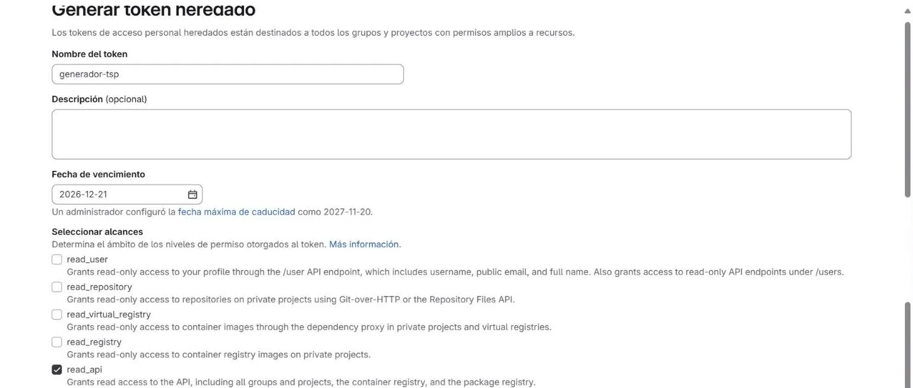

Datos del proyecto en Excel
Qué es. Es un libro de Excel con todos los registros del proyecto: tareas, tiempo, solicitudes de fusión, defectos y riesgos, y con tablas que resumen esos registros. Lo arma el generador de evidencias, una página de este material que lee los datos de su proyecto en GitLab.
Para qué sirve. El postmortem de TSP compara los resultados reales con el plan y deja registrados los datos del proceso (Lectura 1, sección 5.2). El Excel reúne esos datos en un solo archivo para que el equipo los analice y saque sus conclusiones. Los datos se recopilan a medida que avanza el proyecto y se guardan para estimar mejor los proyectos siguientes (Lectura 7, sección 1).
Hojas del Excel
| Hoja | Contenido |
|---|---|
| Resumen | Totales del proyecto: horas, tareas, valor ganado, líneas de código, defectos y densidad de defectos |
| Elementos | Una fila por elemento de trabajo, con tipo, requisito, responsable, hito, estimación, tiempo dedicado, estado y valor planeado |
| Tiempo | Una fila por registro de tiempo, con fecha, semana, persona, elemento, horas y fase |
| Fusiones | Una fila por solicitud de fusión, con autor, tarea, líneas agregadas, comentarios de inspección, aprobación y tasa de inspección |
| Defectos | Una fila por defecto, con tipo, fase inyectada, fase removida y tiempo de corrección |
| Riesgos | Una fila por riesgo, con impacto, probabilidad, responsable y estado |
| Tablas | Horas por fase; estimado frente a dedicado por persona y por semana; valor planeado frente a valor ganado; defectos por tipo y por fase |
| Línea de tiempo | Por semana: tareas terminadas, horas, reuniones, fusiones y defectos |
| Análisis | Espacio para que el equipo escriba lo que muestra cada tabla |
Las tablas están hechas con fórmulas sobre las hojas de datos: al seleccionar una celda se ve cómo se calcula.
El token personal
Qué es. Un token de acceso personal (personal access token) es una clave que GitLab entrega para que un programa consulte sus datos en nombre de ustedes. Tiene permisos limitados, que GitLab llama alcances (scopes), y una fecha de vencimiento, y se puede revocar en cualquier momento sin cambiar la contraseña. El generador necesita un token con el alcance read_api, que solo permite leer.
Para qué sirve. Con el token, el generador lee los datos del proyecto directamente desde GitLab, incluido el detalle de cada registro de tiempo, que el CSV no trae.
Cómo se crea
- Seleccionen su avatar, arriba a la derecha, y luego Editar perfil (Edit profile). En el menú izquierdo seleccionen Tokens de acceso personal (Personal access tokens).
- Seleccionen Generar token (Generate token) y, en el menú, Token heredado (Legacy token). En Nombre del token (Token name) escriban
generador-tsp. En Fecha de vencimiento (Expiration date) dejen una fecha posterior a la entrega. - En Seleccionar alcances (Select scopes) marquen solo
read_api. Al final del formulario seleccionen Generar token (Generate token).
Token con el alcance read_apiy fecha de vencimiento. - GitLab muestra el token una sola vez. Cópienlo con el botón de copiar y péguenlo en el generador. Si lo pierden, revóquenlo y creen otro.
Cómo se revoca
En la misma página de Tokens de acceso personal, busquen generador-tsp en la lista de tokens activos y seleccionen Revocar (Revoke). Desde ese momento el token deja de funcionar.
Cómo se genera el Excel
- Abran el generador de evidencias.
- En Dirección del proyecto peguen la dirección de su proyecto en GitLab, la que aparece en el navegador al abrir la página principal del proyecto, por ejemplo
https://gitlab.com/equipo-finanzas-tsp/finanzas-personales. - En Token peguen su token. En Subgrupo escriban su número de subgrupo, por ejemplo
SG05. - Seleccionen Generar Excel. La página muestra el avance de la consulta y, al terminar, un resumen y el botón para descargar
TSP_E3_SGxx_datos.xlsx. - Revisen los avisos que muestra el generador, por ejemplo registros de tiempo con una fase que no está en la tabla de fases o defectos sin tipo. Corríjanlos en GitLab y generen el Excel de nuevo.
Sin token: desde el CSV
Si prefieren no crear un token, el generador también arma el Excel a partir del CSV de elementos de trabajo, el mismo que exportaron en la Entrega 2. El archivo se procesa en su navegador y no se envía a ningún servidor.
- Exporten el CSV de elementos de trabajo como en la Entrega 2, con Estado en Cualquiera.
- En el generador, en Generar desde el CSV, seleccionen el archivo y su subgrupo, y seleccionen Generar Excel.
- El CSV no trae el detalle de cada registro de tiempo ni las solicitudes de fusión. Diligencien a mano en el Excel estas columnas; las demás se calculan solas:
- Hoja Tiempo, una fila por cada registro del informe de tiempo del grupo: Fecha, Persona (el nombre como aparece en la hoja Elementos), Elemento (el número con
#, por ejemplo#7), Horas (en decimales: 1 hora y 30 minutos es1,5) y Fase (como en la tabla de fases). - Hoja Fusiones, una fila por solicitud de fusión: Fusionada (fecha), Estado (
Fusionada), Líneas agregadas, Inspectores (cantidad) y Horas de inspección.
- Hoja Tiempo, una fila por cada registro del informe de tiempo del grupo: Fecha, Persona (el nombre como aparece en la hoja Elementos), Elemento (el número con
- Guarden también el informe de tiempo del grupo como PDF, como en la Entrega 2:
TSP_E3_SGxx_tiempo.pdf.
Cómo se leen los datos
Cada tabla responde una pregunta sobre el proyecto. Lean cada una en equipo y escriban en la hoja Análisis lo que muestra, con los valores que lo sustentan.
| Tabla | Preguntas para el análisis | Referencia |
|---|---|---|
| Horas por fase | ¿En qué fases se concentró el trabajo? ¿El tiempo de diseño fue al menos igual al de implementación? ¿La revisión de diseño tomó al menos la mitad del tiempo de diseño? | Lectura 8, sección 1.3 |
| Estimado frente a dedicado, por persona | ¿Cada integrante dedicó las horas que se comprometió a dedicar? ¿Quién subestimó o sobreestimó sus tareas, y por cuánto? | Lectura 6, secciones 3.5 y 3.6 |
| Estimado frente a dedicado, por semana | ¿En qué semanas el equipo trabajó más o menos de lo planeado? ¿Qué pasó en esas semanas? | Lectura 6, sección 3.6 |
| Valor planeado frente a valor ganado | ¿En qué semanas el equipo estuvo al día, atrasado o adelantado? ¿Con qué valor ganado cerró el proyecto? | Lectura 7, sección 3 |
| Defectos por tipo | ¿Qué tipos de defecto se repiten más? ¿Qué debe agregarse a las listas de chequeo? | Lectura 8, sección 2.1 |
| Defectos por fase inyectada y removida | ¿En qué fases se introducen los defectos y en cuáles se encuentran? ¿Cuántos llegaron hasta las pruebas? | Lectura 8, sección 3 |
| Densidad de defectos y tasa de inspección | ¿Cuántos defectos hay por cada mil líneas? ¿Las inspecciones se hicieron a máximo 150 líneas por hora? | Lectura 8, secciones 1.1 y 1.2 |
Postmortem
Qué es. El postmortem es la evaluación final del ciclo del proyecto. El equipo analiza qué salió bien, qué se puede mejorar y cómo desempeñó cada uno su rol (Lectura 5, sección 4.10); compara los resultados reales con el plan, registra los datos del proceso y documenta sus ideas de mejora (Lectura 1, sección 5.2).
Para qué sirve. Deja el proyecto documentado con sus datos y sus aprendizajes, como referencia para los proyectos siguientes. Responde las preguntas de la Entrega 3: qué pasó durante el desarrollo, cómo resolvieron las dificultades, cómo fue el manejo de los roles y si los reportes de trabajo reflejan el compromiso individual y del equipo.
Cómo se hace
- Creen una tarea sin requisito llamada
Postmortem del proyecto, con la etiquetatarea, el hito de la última semana, responsable y estimación. Allí registra cada uno su tiempo del postmortem con la faseGestión. - Generen el Excel del proyecto con los datos al cierre.
- Creen en la wiki la página Postmortem con el contenido de este archivo. Antes de pegarlo, seleccionen Cambiar a edición de texto sin formato (Switch to plain text editing), debajo del editor, para que las tablas queden con su formato:
También pueden descargar el archivo.
Cargando la plantilla…
- Reúnanse para diligenciarla. Llenen el resumen consolidado con los valores del Excel y respondan cada sección con datos del proyecto: horas, valor ganado, defectos, actas y reportes semanales.
- Escriban en la tabla de roles qué hizo cada integrante en su rol y dónde queda la evidencia en GitLab, por ejemplo las actas que registró o las inspecciones que hizo.
Conclusiones
Qué es. Son entre 6 y 10 afirmaciones del equipo sobre lo que aprendió en el proyecto, cada una sustentada en un dato de sus registros.
Para qué sirve. Resumen el análisis y dejan claro qué haría el equipo igual y qué haría distinto en un próximo proyecto.
Cómo se escriben
- Cada conclusión dice qué encontró el equipo, con el dato que lo muestra y su fuente. Por ejemplo: La implementación tomó 40 % más tiempo del estimado en las tareas de búsqueda avanzada (hoja Tablas, estimado frente a dedicado); en el próximo proyecto el equipo estimará esas tareas a partir de este dato.
- Cubran los temas de la entrega: el plan y su cumplimiento, el trabajo con los roles, la calidad del producto y el compromiso del equipo.
- Escríbanlas en la sección Conclusiones de la página Postmortem.
Línea de tiempo y video
Qué es. La sustentación es un video de máximo 5 minutos que presenta el prototipo del catálogo virtual en funcionamiento y una línea de tiempo con los avances del proyecto, los roles y las actividades que llevó a cabo el equipo.
La línea de tiempo
La hoja Línea de tiempo del Excel trae, por cada semana, las tareas terminadas, las horas del equipo, las reuniones, las solicitudes de fusión y los defectos. Con esos datos, con los roles de la wiki Equipo y roles y con las actas, armen la línea de tiempo en el formato que prefieran: una diapositiva, un diagrama o una tabla.
El video
- Duración máxima: 5 minutos.
- Contenido: el prototipo funcionando, con los módulos que construyeron, y la línea de tiempo del proyecto.
- Publicación: en YouTube, como video No listado. Así solo lo ve quien tiene el enlace.
Cómo se publica en YouTube como no listado
- Con una cuenta de Google, entren a YouTube, seleccionen Crear > Subir video y elijan el archivo.
- Escriban el título, por ejemplo
TSP SG05 · Catálogo virtual, y en la pregunta de público elijan que el video no es para niños. - En Visibilidad elijan No listado y seleccionen Guardar. Copien el enlace del video.
- Abran el enlace en una ventana privada del navegador para comprobar que se ve sin iniciar sesión.
- Peguen el enlace en la sección Sustentación en video de la página Postmortem.
Verificación de la etapa
Al terminar esta etapa, su equipo debe tener:
- El Excel del proyecto generado con los datos al cierre y la hoja Análisis diligenciada.
- La página Postmortem de la wiki con el resumen consolidado, las respuestas a las cuatro preguntas de la entrega, la tabla de roles y entre 6 y 10 conclusiones.
- El video de máximo 5 minutos publicado como no listado y su enlace en la página Postmortem.
- El token del generador revocado.